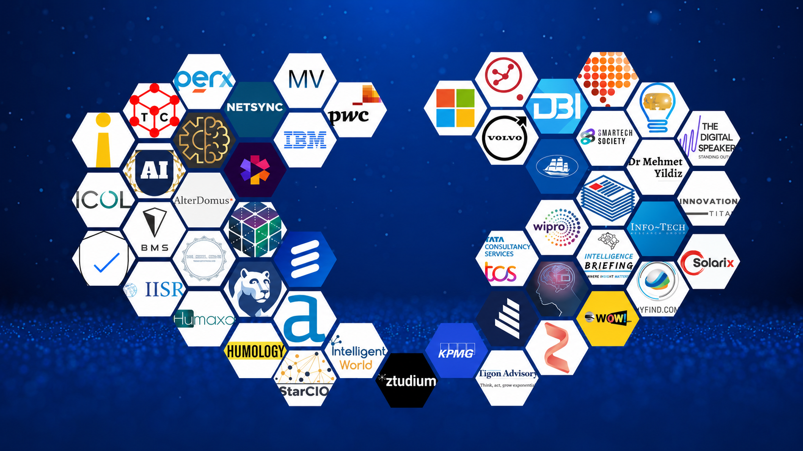
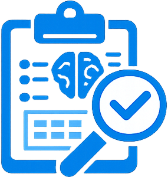

AI WITHOUT STRATEGY
IS EXPENSIVE
EXPERIMENTATION.
EconBrain helps organizations build artificial intelligence strategies grounded in operational reality — not vendor roadmaps. From institutional readiness through to sustained integration, we ensure AI serves strategic intent and produces measurable outcomes.
Begin the Conversation →
MOST AI INITIATIVES FAIL BEFORE THEY DELIVER VALUE.
Organizations are deploying AI at record speed. The majority will not see meaningful returns. The failure is not technical — it is strategic. The absence of institutional alignment, governance design, and decision architecture ensures that most AI investments remain islands of capability inside organizations that cannot use them.
From startups to established enterprises, our projects demonstrate real-world results and measurable growth. We turn strategies into success. See how our work drives innovation, growth, and sustainable change. Every project tells a story of transformation — dive into the journeys of our clients and the results we deliver.
PROJECT
CHALLENGES.
Discover how we've helped businesses grow, transform, and succeed through strategic consulting solutions. Explore our portfolio of impactful projects each tailored to solve unique business challenges — demonstrating real-world results and measurable growth. We turn strategies into success.
Strategic AI Assessment
Before any AI investment is authorized, we conduct a comprehensive organizational intelligence review — mapping existing capabilities, decision architectures, data infrastructure, and strategic objectives to identify precisely where AI creates genuine institutional value.
Operational Integration
Artificial intelligence cannot be layered over broken processes. We work at the level of operational workflows, organizational structures, and institutional behaviors to design integration pathways that make AI adoption structurally sound and operationally sustainable.

Decision Intelligence
We architect the analytical and reporting layers that translate AI outputs into executive-ready intelligence — ensuring that what is built is used to govern, direct, and differentiate the organization at the highest level where decisions truly matter.

INTELLIGENCE
THAT CHANGES
HOW YOU DECIDE.
EconBrain engagements are defined by operational and institutional outcomes — not technology deployment milestones. These represent the strategic results our clients build toward and are held accountable to.
- Measurable Operational Efficiency
- Higher-Quality Executive Decisions
- Reduced Transformation Risk
- Institutional AI Readiness
- Long-Term Competitive Positioning

WHAT WE
DELIVER.
Six institutional capability areas designed to move organizations from AI curiosity to AI competence — at the speed and analytical depth that strategic transformation demands.
- AI Strategy Development
- AI Transformation Advisory
- AI Readiness Assessment
- Decision Support Intelligence
- Organizational AI Integration
Frequently Asked Questions
AI & INNOVATION,
ANSWERED.